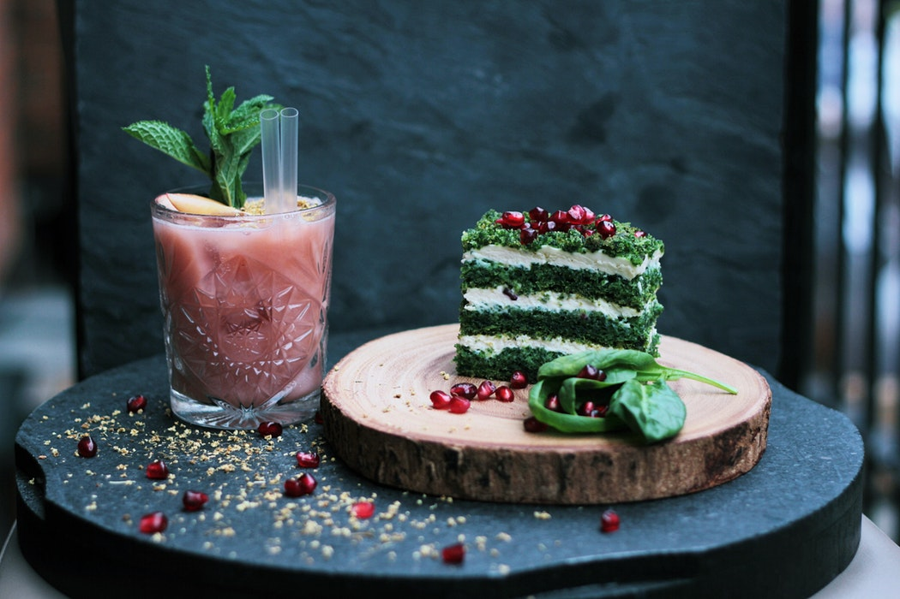

Participez à des Dîners gastronomiques
mémorables.
Notre restaurant et ses chefs
Nos chefs et sommeliers sont autant de preuves de notre passion pour la restauration. Notre liste de talents se compose de Heston Blumenthal (du restaurant « Dinner » deux étoiles au guide Michelin au Mandarin Oriental Hyde Park, London) et de Pierre Gagnaire qui a ouvert son premier restaurant américain au Mandarin Oriental, Las Vegas après avoir fait ses armes à Parimis Hotel, Hong Kong.
Nous sommes également fiers de compter parmi nous les chefs Daniel Boulud (Bar Boulud à Londres et Boston), Richard Ekkebus (restaurant Amber, deux étoiles au guide Michelin à The Landmark Mandarin Oriental, Hong Kong) et Thierry Marx (Mandarin Oriental, Paris).
Carme Ruscalleda dirige le restaurant « Moments », deux étoiles au guide Michelin, à Barcelone tandis qu’à Miami le chef Gaston Acurio, du restaurant La Mar, sert une des meilleures cuisines péruviennes des États-Unis. Antonio Guida a déjà permis au restaurant « Seta » du Mandarin Oriental, Milan, l’un des hôtels les plus récents du groupe, de gagner une étoile au guide Michelin.
Un extrait de notre menu
VOICI LA CARTE DU RESTAURANT PARIMIS
LES ENTRÉES DU RESTAURANT PARIMIS
L'oreiller de la belle Aurore
17,00 €Les six escargots de Bourgogne sauvages
11,00 €Toats de baguette tradition bio, moelle et girolles fraîches
14,00 €Foie gras de canard au gewurztraminer, confit de figues fraîches
16,00 €Saumon Label Rouge à la parisienne, macédoine de légumes frais
13,00 €LES PLATS DU RESTAURANT PARIMIS
Belle sole meunière et pommes vapeur
39,00 €Filet de boeuf ( race normande ) au poivre
34,00 €Tête de veau et ses légumes, sauce ravigote
21,00 €Filet de canette de Barbarie aux figues, pommes gaufrettes
25,00 €Choucroute de haddock, sandre, langoustine fraîche et quenelle maison
28,00 €LES DESSERTS DU RESTAURANT PARIMIS
Emincé d'ananas frais
8,00 €Baba au rhum et chantilly
12,00 €Crème caramel au beurre salé
7,00 €Nougat glacé maison aux fruits secs, coulis de saison
9,00 €Omelette norvégienne flambée à l'eau de vie de framboises
12,00 €LES MENUS ET FORMULES DU RESTAURANT PARIMIS
Menu brasserie : Plat + boissons
30,00 €Menu dégustation : entrée + plat ou plat + dessert
55,00 €Menu restaurant : entrée + plat + dessert
75,00 €LES MENUS SPÉCIAUX DU RESTAURANT PARIMIS
Menus des fêtes de fin d'année !!
139,00 €